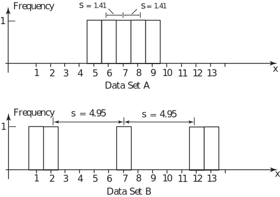
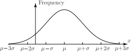
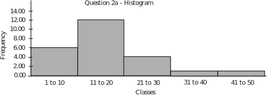
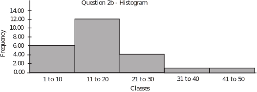

4 Location and spread
Very often we can summarize a distribution by specifying two values which measure the location or mean value of the distribution and dispersion or spread of the distribution about its mean. You will see later (see subsection 3 below) that not all distributions can be adequately represented by simply measuring location and spread - the shape of a distribution is also of fundamental importance. Assume, for the purposes of this Section that the distribution is reasonably symmetrical and roughly follows the bell-shaped distribution illustrated below.
Figure 5
In order to summarise a distribution as briefly as possible we shall now attempt to measure the centre or location of the distribution and the spread or dispersion of the distribution about its centre.
Notation
The symbols
and
are used to represent the mean and standard deviation of a population and
and
are used to represent the mean and standard deviation of a sample taken from a population.
This Section of the Workbook will show you how to calculate the mean.
4.1 Measures of location
There are three widely used measures of location, these are:
- The Mean, the arithmetic average of the data;
- The Median, the central value of the data;
- The Mode, the most frequently occurring value in the data set.
This Section of the booklet will show you how to calculate the mean.
Key Point 2
If we take a set of numbers , its mean value is defined as:
In words, this formula says
sum the values of and divide by the number of numbers you have summed.
Calculating mean values from raw data is accurate but very time-consuming and tedious. It is much more usual to work from a frequency distribution which makes the calculation much easier but may involve a slight loss of accuracy. In order to calculate the mean of a distribution from a frequency table we make the major assumption that each class interval can be represented accurately by its Mid-Interval Value (MIV). Essentially, this means that we are assuming that the class values are evenly spread above and below the MIV for each class in the distribution so that the sum of the values in each class is approximately equal to the MIV multiplied by the number of members in the class.
The calculation resulting from this assumption is illustrated below for the data on heights of students introduced on page 3 of this Section.
| Class | MIV (x) | Frequency (f) | fx |
| 149.5- 154.5 | 152 | 2 | 304 |
| 154.5 - 159.5 | 157 | 0 | 0 |
| 159.5 - 164.5 | 162 | 4 | 648 |
| 164.5 - 169.5 | 167 | 8 | 1336 |
| 169.5 - 174.5 | 172 | 5 | 860 |
| 174.5 - 179.5 | 177 | 7 | 1239 |
| 179.5 - 184.5 | 182 | 4 | 728 |
The average value of the distribution is given by
The formula usually used to calculate the mean value is
There are techniques for simplifying the arithmetic but the wide-spread use of electronic calculators (many of which will do the calculation almost at the push of a button) and computers has made a working knowledge of such techniques redundant.
Task!
Use the following data set of heights of a sample of 30 students (met before in the Task on page 6) to form a frequency distribution and calculate the mean of the data.
| 155.3 | 177.3 | 146.2 | 163.1 | 161.8 | 146.3 | 167.9 | 165.4 | 172.3 | 188.2 |
| 178.8 | 151.1 | 189.4 | 164.9 | 174.8 | 160.2 | 187.1 | 163.2 | 147.1 | 182.2 |
| 178.2 | 172.8 | 164.4 | 177.8 | 154.6 | 154.9 | 176.3 | 148.5 | 161.8 | 178.4 |
| Class | MIV (x) | Frequency (f) | fx |
| 145 - | 147.5 | 4 | 590 |
| 150 - | 152.5 | 3 | 457.5 |
| 155 - | 157.5 | 1 | 157.5 |
| 160 - | 162.5 | 7 | 1137.5 |
| 165 - | 167.5 | 2 | 335 |
| 170 - | 172.5 | 3 | 517.5 |
| 175 - | 177.5 | 6 | 1065 |
| 180 - | 182.5 | 1 | 182.5 |
| 185 - | 187.5 | 3 | 562.5 |
| Sum = 30 | Sum=5005 |
4.2 Measures of spread
The members of a distribution may be scattered about a mean in many different ways so that a single value describing the central location of a distribution cannot be sufficient to completely define the distribution.
The two data sets below have the same mean of 7 but clearly have different spreads about the mean.
- Data set : 5, 6, 7, 8, 9
- Data set : 1, 2, 7, 12, 13
There are several ways in which one can measure the spread of a distribution about a mean, for example
- the range - the difference between the greatest and least values;
- the inter-quartile range - the difference between the upper and lower quartiles;
- the mean deviation - the average deviation of the members of the distribution
from the mean.
Each of these measures has advantages and problems associated with it.
|
Measure of Spread |
Advantages |
Disadvantages |
|
Range |
Easy to calculate |
Depends on two extreme values and does not take into account any intermediate values |
|
Inter-Quartile Range |
Is not susceptible to the influence of extreme values. |
Measures only the central 50% of a distribution. |
|
Mean Deviation |
Takes into account every member of a distribution. |
Always has the value zero for a symmetrical distribution. |
By far the most common measure of the spread of a distribution is the standard deviation which is obtained by using the procedure outlined below.
Consider the two data sets and given above. Before writing down the formula for calculating the standard deviation we shall look at the tables below and discuss how a measure of spread might evolve.
DATA SET
| 5 | -2 | 4 |
| 6 | -1 | 1 |
| 7 | 0 | 0 |
| 8 | 1 | 1 |
| 9 | 2 | 4 |
DATA SET
| 1 | -6 | 36 |
| 2 | -5 | 25 |
| 7 | 0 | 0 |
| 12 | 5 | 25 |
| 13 | 6 | 36 |
Notice that the ranges of the data sets are 4 and 12 respectively and that the mean deviations are both zero. Clearly the spreads of the two data sets are different and the zero value for the mean deviations, while factually correct, has no meaning in practice.
To avoid problems inherent in the mean deviation (cancelling to give zero with a symmetrical distribution for example) it is usual to look at the squares of the mean deviations and then average them. This gives a value in square units and it is usual to take the square root of this value so that the spread is measured in the same units as the original values. The quantity obtained by following the routine outlined above is called the standard deviation .
The symbol used to denote the standard deviation is so that the standard deviations of the two data sets are:
The two distributions and their spreads are illustrated by the diagrams below.
Figure 6

Task!
Calculate the standard deviation of the data set: 3, 4, 5, 6, 6, 6, 7, 8, 9
| Data | ||
| 3 | -3 | 9 |
| 4 | -2 | 4 |
| 5 | -1 | 1 |
| 6 | 0 | 0 |
| 6 | 0 | 0 |
| 6 | 0 | 0 |
| 7 | 1 | 1 |
| 8 | 2 | 4 |
| 9 | 3 | 9 |
standard deviation
4.3 Summary
The procedure for calculating the standard deviation may be summarized as follows:
from every raw data value, subtract the mean, square the
results, average them and then take the square root.
In terms of a formula this procedure is given in Key Point 3:
You will often need a quantity called the variance of a set of data, this simply the square of the standard deviation and is denoted by . Calculating the variance is exactly like calculating the standard deviation except that you do not take the square root at the end as in Key Point 4:
Very often our data represent a sample of size from some population. If we could observe every member of the population then we could work out the mean and standard deviation for the whole population. Often we cannot do this and can only observe a sample. The population mean and population variance are therefore unknown but we can regard the sample mean and sample variance as estimates of them. To make the distinction clear, we usually use Greek letters for population parameters . So, the population mean is and the population variance is The population standard deviation is, of course,
When we are estimating and using a sample of data we use a slightly different formula in the case of the variance. This formula is given in Key Point 5. It is discussed further in Workbook 40. The difference is simply that we divide by instead of by In the rest of this Workbook we will use the notation if we are dividing by and if we are dividing by We will use and for the corresponding standard deviations which are simply the square roots of these variances.
Key Point 5
Formula for Estimating Variance
For data represented by a frequency distribution, in which each quantity appears with frequency , the formula in Key Point 4 becomes
This formula can be simplified as shown below to give a formula which lends itself to a calculation based on a frequency distribution. The derivation of the variance formula is shown below.
This formula is not as complicated as it looks at first sight. If you look back at the calculation for the mean you will see that you only need one more quantity in order to calculate the standard deviation, this quantity is .
4.4 Calculation of the variance
The complete calculation of the mean and the variance for a frequency distribution (heights of 30 students, page 3) is shown below.
| Class | MIV ( ) | Frequency ( ) | ||||
| 149.5 - 154.5 | 152 | 2 | 304 | 46,208 | ||
| 154.5 - 159.5 | 157 | 0 | 0 | 0 | ||
| 159.5 - 164.5 | 162 | 4 | 648 | 104,976 | ||
| 164.5 - 169.5 | 167 | 8 | 1336 | 223,112 | ||
| 169.5 - 174.5 | 172 | 5 | 860 | 147,920 | ||
| 174.5 - 179.5 | 177 | 7 | 1239 | 219,303 | ||
| 179.5 - 184.5 | 182 | 4 | 728 | 132,496 | ||
Once the appropriate columns are summed, the calculation is completed by substituting the values into the formulae for the mean and the standard deviation. The mean value is
The variance is
Taking the square root gives the standard deviation as
So far, you have only met the suggestion that a distribution can be represented by its mean and its standard deviation. This is a reasonable assertion provided that the distribution is single-peaked and symmetrical. Fortunately, many of the distributions met in practice are single-peaked and symmetrical. In particular, the so-called normal distribution which is bell-shaped and symmetrical about its mean is usually summarized numerically by its mean and standard deviation or by its mean and variance. A typical normal distribution is illustrated below.
Figure 7

It is sometimes found that data cannot be assumed to be normally distributed and techniques have been developed which enable such data to be explored, illustrated, analysed and represented using statistics other than the mean and standard deviation.
Task!
Use the following data set of student heights (taken from the Task on page 5) to form a frequency distribution and calculate the mean, variance and standard deviation of the data.
| 155.3 | 177.3 | 146.2 | 163.1 | 161.8 | 146.3 | 167.9 | 165.4 | 172.3 | 188.2 |
| 178.8 | 151.1 | 189.4 | 164.9 | 174.8 | 160.2 | 187.1 | 163.2 | 147.1 | 182.2 |
| 178.2 | 172.8 | 164.4 | 177.8 | 154.6 | 154.9 | 176.3 | 148.5 | 161.8 | 178.4 |
| Class | MIV ( ) | Frequency ( ) | ||
| 145 - | 147.5 | 4 | 590 | 87025 |
| 150 - | 152.5 | 3 | 457.5 | 69768.75 |
| 155 - | 157.5 | 1 | 157.5 | 24806.25 |
| 160 - | 162.5 | 7 | 1137.5 | 184843.75 |
| 165 - | 167.5 | 2 | 335 | 56112.5 |
| 170 - | 172.5 | 3 | 517.5 | 89268.75 |
| 175 - | 177.5 | 6 | 1065 | 189037.5 |
| 180 - | 182.5 | 1 | 182.5 | 33306.25 |
| 185 - | 187.5 | 3 | 562.5 | 105468.75 |
- Mean
- Variance
- Standard Deviation
Exercises
-
Find
- the mean and standard deviation,
-
the median and inter-quartile range, of the following data set:
1, 2, 3, 4, 5, 6, 7, 8, 9, 10
Would you say that either summary set is preferable to the other?
If the number 10 is replaced by the number 100 so that the data set becomes
1, 2, 3, 4, 5, 6, 7, 8, 9, 100
calculate the same statistics again and comment on which set you would use to summarise the data.
-
-
The following data give the number of calls per day received by the service department of a central heating firm during a period of 24 working days.
16, 12, 1, 6, 44, 28, 1, 19, 15, 11, 18, 35, 21, 3, 3, 14, 22, 5, 13, 15, 15, 25, 18, 16. Organise the data into a frequency table using the class intervals
1 - 10, 11 - 20, 21 - 30, 31 - 40, 41 - 50
Construct a histogram representing the data and calculate the mean and variance of the data.
-
Repeat question
-
using the data set given below:
11, 12, 1, 2, 41, 21, 1, 11, 12, 11, 11, 32, 21, 3, 3, 11, 21, 2, 11, 12, 11, 21, 12, 11. What do you notice about the histograms that you have produced? What do you notice about the means and variances of the two distributions?
Do the results surprise you? If so, say why.
-
using the data set given below:
-
The following data give the number of calls per day received by the service department of a central heating firm during a period of 24 working days.
- For each of the data sets in Question 2, calculate the mean and variance from the raw data and compare the results with those obtained from the frequency tables. Comment on any differences that you find and explain them.
-
A lecturer gives a science test to two classes and calculates the results as follows:
Class - average mark 36% Class - average mark 40%
The lecturer reports to her Head of Department that the average mark over the two classes must be 38%. The Head of Department disagrees, who is right?
Do you need any additional information, if so what, to make a decision as to who is right?
-
Mean = 5.50, standard deviation = 2.87, mid-spread = 6. Very little to choose between the summary statistics, mean = median and inter-quartile range is approximately twice the standard deviation.
For the second set of data mean = 14.50, standard deviation = 29.99 and the
inter-quartile range = 6. Here the median and inter-quartile range are preferable to the mean and standard deviation - they represent the bulk of the data much more realistically.
-
-
Calculations from the raw data: Mean = 15.67, standard deviation = 10.23
However, from the frequency table: Mean = 16.75, standard deviation = 9.71

-
Mean = 12.71, standard deviation = 9.50
However, from the frequency table: Mean = 16.75, standard deviation = 9.71

The mean, standard deviation and histogram are all identical since the classes and frequencies are. This may be surprising since the data sets are different!
-
Calculations from the raw data: Mean = 15.67, standard deviation = 10.23
-
The means and standard deviations calculated from the raw data are clearly the ones to use. The data given in Question 2(a) has a reasonably uniform spread throughout the classes, hence the reasonable agreement in the calculated means and standard deviations.
The data given in Question 2(b) is biased towards the bottom of the classes, hence the high value of the calculated mean from the frequency distribution which assumes a reasonable spread of data throughout the classes. The actual spread of the data is the same (hence the same standard deviations) but the data in Question 2(b) is shifted down relative to that give in Question 2(a).
- The Head of Department is right. The lecturer is only correct if both classes have the same number of students. Example: if class has 20 students and class has 60 students, the average mark will be: .